Empirical cumulative distribution function with pointwise confidence intervals on probabilities or on quantiles
CIcdfplot.Rdcdfband plots the empirical cumulative distribution function with the bootstraped pointwise confidence intervals on probabilities of on quantiles.
Usage
CIcdfplot(b, CI.output, CI.type = "two.sided", CI.level = 0.95, CI.col = "red",
CI.lty = 2, CI.fill = NULL, CI.only = FALSE, xlim, ylim, xlogscale = FALSE,
ylogscale = FALSE, main, xlab, ylab, datapch, datacol, fitlty, fitcol, fitlwd,
horizontals = TRUE, verticals = FALSE, do.points = TRUE, use.ppoints = TRUE,
a.ppoints = 0.5, name.points = NULL, lines01 = FALSE, plotstyle = "graphics", ...)Arguments
- b
One
"bootdist"object.- CI.output
The quantity on which (bootstraped) bootstraped confidence intervals are computed: either
"probability"or"quantile").- CI.type
Type of confidence intervals : either
"two.sided"or one-sided intervals ("less"or"greater").- CI.level
The confidence level.
- CI.col
the color of the confidence intervals.
- CI.lty
the line type of the confidence intervals.
- CI.fill
a color to fill the confidence area. Default is
NULLcorresponding to no filling.- CI.only
A logical whether to plot empirical and fitted distribution functions or only the confidence intervals. Default to
FALSE.- xlim
The \(x\)-limits of the plot.
- ylim
The \(y\)-limits of the plot.
- xlogscale
If
TRUE, uses a logarithmic scale for the \(x\)-axis.- ylogscale
If
TRUE, uses a logarithmic scale for the \(y\)-axis.- main
A main title for the plot, see also
title.- xlab
A label for the \(x\)-axis, defaults to a description of
x.- ylab
A label for the \(y\)-axis, defaults to a description of
y.- datapch
An integer specifying a symbol to be used in plotting data points, see also
points(only for non censored data).- datacol
A specification of the color to be used in plotting data points.
- fitcol
A (vector of) color(s) to plot fitted distributions. If there are fewer colors than fits they are recycled in the standard fashion.
- fitlty
A (vector of) line type(s) to plot fitted distributions/densities. If there are fewer values than fits they are recycled in the standard fashion. See also
par.- fitlwd
A (vector of) line size(s) to plot fitted distributions/densities. If there are fewer values than fits they are recycled in the standard fashion. See also
par.- horizontals
If
TRUE, draws horizontal lines for the step empirical cdf function (only for non censored data). See alsoplot.stepfun.- verticals
If
TRUE, draws also vertical lines for the empirical cdf function. Only taken into account ifhorizontals=TRUE(only for non censored data).- do.points
logical; if
TRUE, also draw points at the x-locations. Default is TRUE (only for non censored data).- use.ppoints
If
TRUE, probability points of the empirical distribution are defined using functionppointsas(1:n - a.ppoints)/(n - 2a.ppoints + 1)(only for non censored data). IfFALSE, probability points are simply defined as(1:n)/n. This argument is ignored for discrete data.- a.ppoints
If
use.ppoints=TRUE, this is passed to functionppoints(only for non censored data).- name.points
Label vector for points if they are drawn i.e. if do.points = TRUE (only for non censored data).
- lines01
A logical to plot two horizontal lines at
h=0andh=1forcdfcomp.- plotstyle
"graphics"or"ggplot". If"graphics", the display is built withgraphicsfunctions. If"ggplot", a graphic object output is created withggplot2functions (theggplot2package must be installed).- ...
Further graphical arguments passed to
matlinesorpolygon, respectively whenCI.fill=FALSEandCI.fill=TRUE.
Details
CIcdfplot provides a plot of the empirical distribution using
cdfcomp or cdfcompcens,
with bootstraped pointwise confidence intervals on probabilities (y values)
or on quantiles (x values).
Each interval is computed by evaluating the quantity of interest (probability
associated to an x value or quantile associated to an y value) using all the
bootstraped values of parameters to get a bootstraped sample
of the quantity of interest and then by calculating percentiles on this sample to get a
confidence interval (classically 2.5 and 97.5 percentiles for a 95 percent
confidence level).
If CI.fill != NULL, then the whole confidence area is filled by the color CI.fill
thanks to the function polygon, otherwise only borders are drawn thanks to the function
matline. Further graphical arguments can be passed to these functions using
the three dots arguments ....
See also
See also cdfcomp, cdfcompcens,
bootdist and quantile.
References
Delignette-Muller ML and Dutang C (2015), fitdistrplus: An R Package for Fitting Distributions. Journal of Statistical Software, 64(4), 1-34.
Examples
# We choose a low number of bootstrap replicates in order to satisfy CRAN running times
# constraint.
# For practical applications, we recommend to use at least niter=501 or niter=1001.
if (requireNamespace ("ggplot2", quietly = TRUE)) {ggplotEx <- TRUE}
# (1) Fit of an exponential distribution
#
set.seed(123)
s1 <- rexp(50, 1)
f1 <- fitdist(s1, "exp")
b1 <- bootdist(f1, niter= 11) #voluntarily low to decrease computation time
# plot 95 percent bilateral confidence intervals on y values (probabilities)
CIcdfplot(b1, CI.level= 95/100, CI.output = "probability")
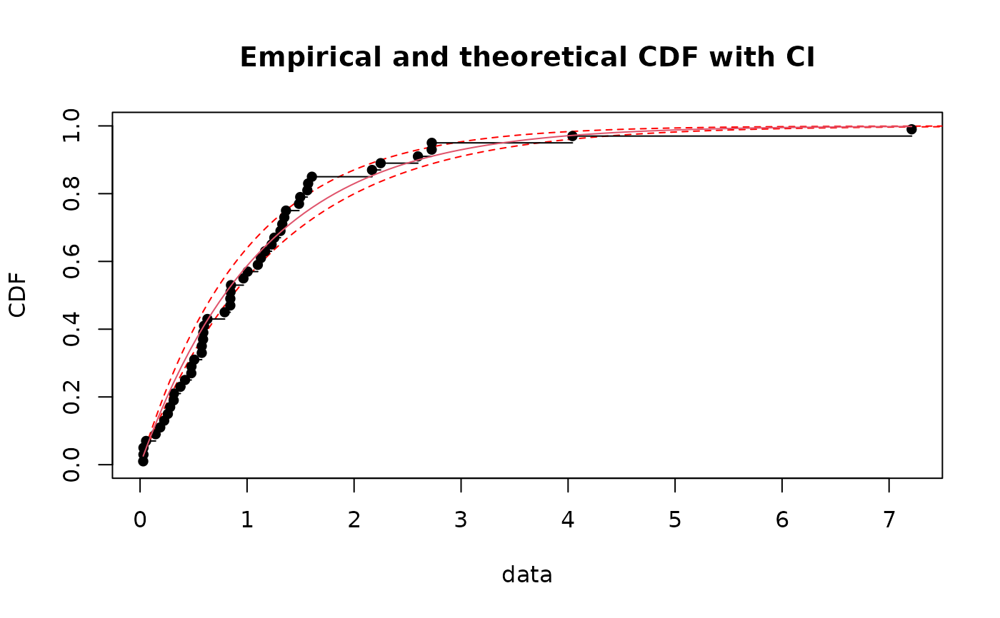
if (ggplotEx) CIcdfplot(b1, CI.level= 95/100, CI.output = "probability", plotstyle = "ggplot")
# \donttest{
# plot of the previous intervals as a band
CIcdfplot(b1, CI.level= 95/100, CI.output = "probability",
CI.fill = "pink", CI.col = "red")
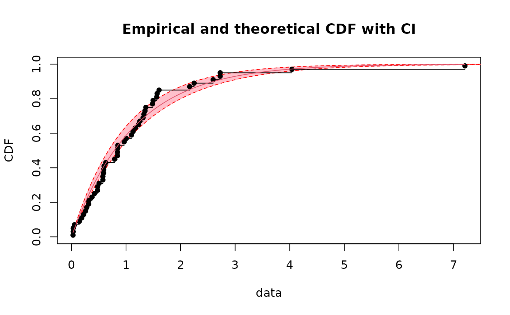
if (ggplotEx) CIcdfplot(b1, CI.level= 95/100, CI.output = "probability",
CI.fill = "pink", CI.col = "red", plotstyle = "ggplot")
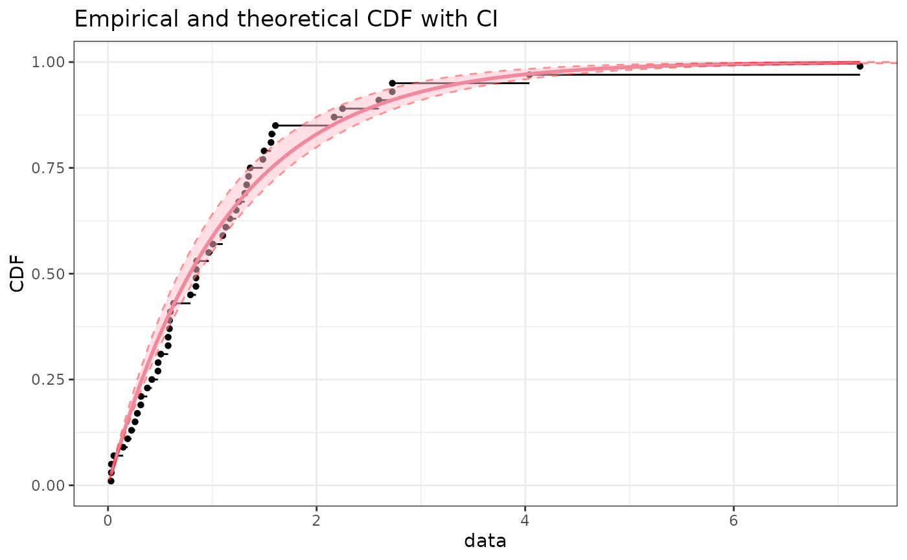
# plot of the previous intervals as a band without empirical and fitted dist. functions
CIcdfplot(b1, CI.level= 95/100, CI.output = "probability", CI.only = TRUE,
CI.fill = "pink", CI.col = "red")
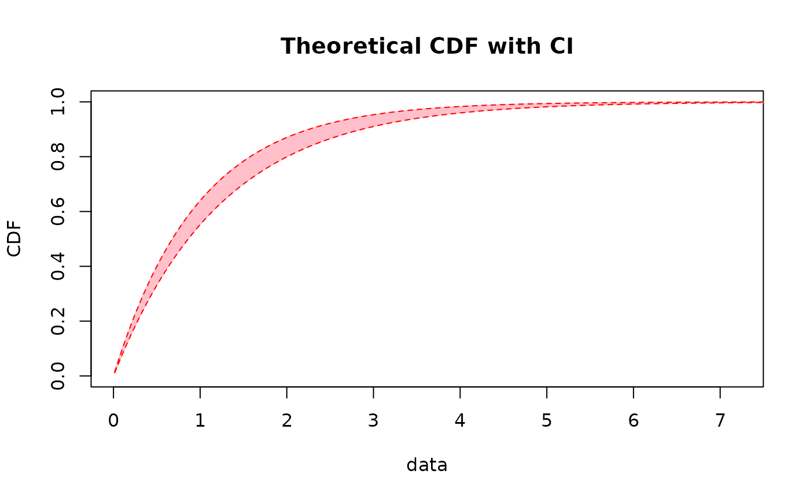
if (ggplotEx) CIcdfplot(b1, CI.level= 95/100, CI.output = "probability", CI.only = TRUE,
CI.fill = "pink", CI.col = "red", plotstyle = "ggplot")
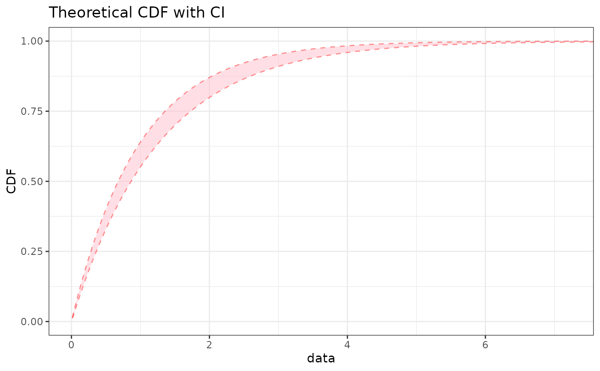
# same plot without contours
CIcdfplot(b1, CI.level= 95/100, CI.output = "probability", CI.only = TRUE,
CI.fill = "pink", CI.col = "pink")
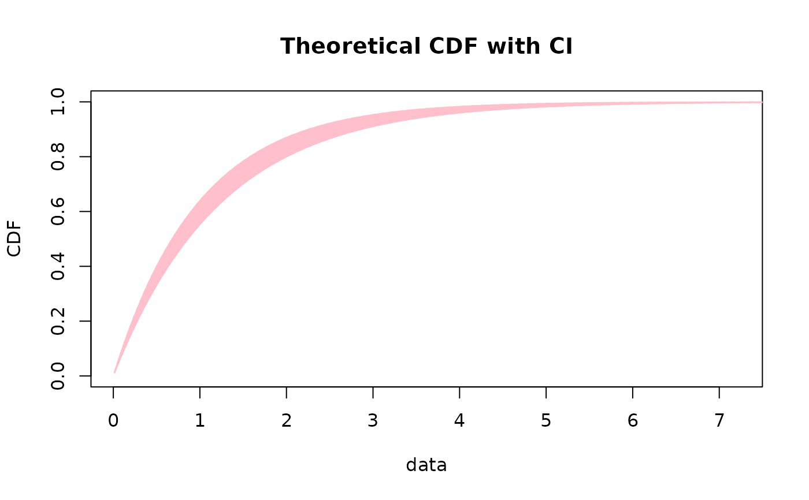
if (ggplotEx) CIcdfplot(b1, CI.level= 95/100, CI.output = "probability", CI.only = TRUE,
CI.fill = "pink", CI.col = "pink", plotstyle = "ggplot")
# plot 95 percent bilateral confidence intervals on x values (quantiles)
CIcdfplot(b1, CI.level= 95/100, CI.output = "quantile")
if (ggplotEx) CIcdfplot(b1, CI.level= 95/100, CI.output = "quantile", plotstyle = "ggplot")
 # plot 95 percent unilateral confidence intervals on quantiles
CIcdfplot(b1, CI.level = 95/100, CI.output = "quant", CI.type = "less",
CI.fill = "grey80", CI.col = "black", CI.lty = 1)
if (ggplotEx) CIcdfplot(b1, CI.level = 95/100, CI.output = "quant", CI.type = "less",
CI.fill = "grey80", CI.col = "black", CI.lty = 1, plotstyle = "ggplot")
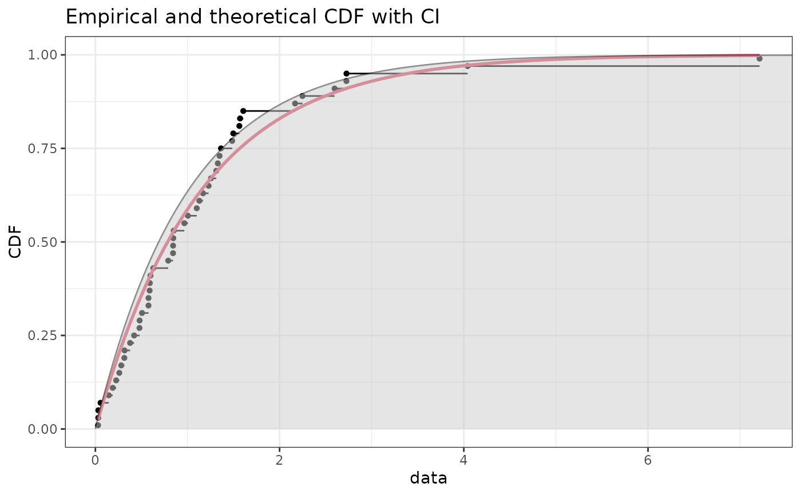
CIcdfplot(b1, CI.level= 95/100, CI.output = "quant", CI.type = "greater",
CI.fill = "grey80", CI.col = "black", CI.lty = 1)
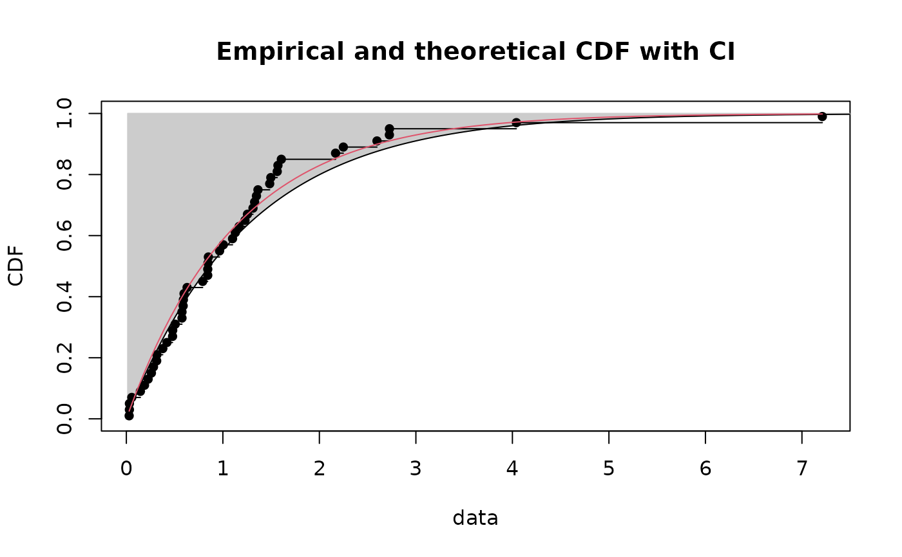
if (ggplotEx) CIcdfplot(b1, CI.level= 95/100, CI.output = "quant", CI.type = "greater",
CI.fill = "grey80", CI.col = "black", CI.lty = 1, plotstyle = "ggplot")
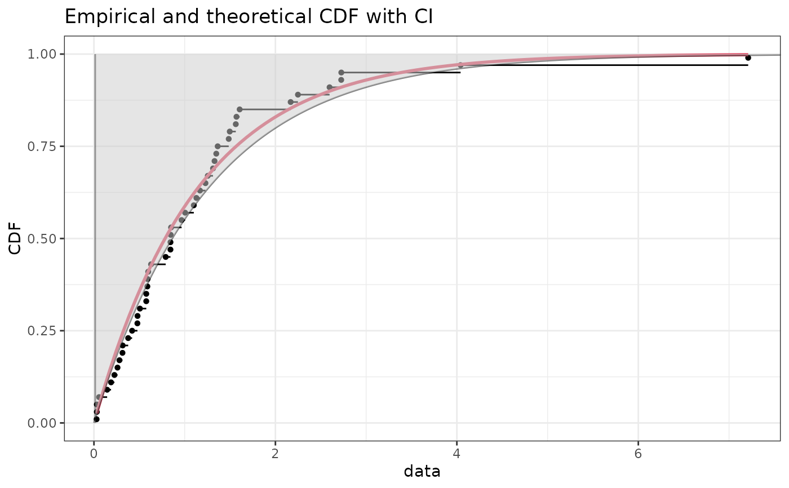
# (2) Fit of a normal distribution on acute toxicity log-transformed values of
# endosulfan for nonarthropod invertebrates, using maximum likelihood estimation
# to estimate what is called a species sensitivity distribution
# (SSD) in ecotoxicology, followed by estimation of the 5, 10 and 20 percent quantile
# values of the fitted distribution, which are called the 5, 10, 20 percent hazardous
# concentrations (HC5, HC10, HC20) in ecotoxicology, with their
# confidence intervals, from a small number of bootstrap
# iterations to satisfy CRAN running times constraint and plot of the band
# representing pointwise confidence intervals on any quantiles (any HCx values)
# For practical applications, we recommend to use at least niter=501 or niter=1001.
#
data(endosulfan)
log10ATV <- log10(subset(endosulfan, group == "NonArthroInvert")$ATV)
namesATV <- subset(endosulfan, group == "NonArthroInvert")$taxa
fln <- fitdist(log10ATV, "norm")
bln <- bootdist(fln, bootmethod ="param", niter=101)
quantile(bln, probs = c(0.05, 0.1, 0.2))
#> (original) estimated quantiles for each specified probability (non-censored data)
#> p=0.05 p=0.1 p=0.2
#> estimate 1.744227 2.080093 2.4868
#> Median of bootstrap estimates
#> p=0.05 p=0.1 p=0.2
#> estimate 1.844443 2.190122 2.565053
#>
#> two-sided 95 % CI of each quantile
#> p=0.05 p=0.1 p=0.2
#> 2.5 % 1.334340 1.697255 2.099378
#> 97.5 % 2.531564 2.770455 3.053706
CIcdfplot(bln, CI.output = "quantile", CI.fill = "lightblue", CI.col = "blue",
xlim = c(0,5), name.points=namesATV)
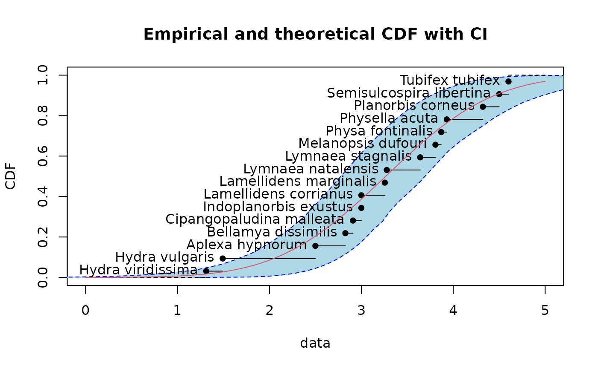
if (ggplotEx) CIcdfplot(bln, CI.output = "quantile", CI.fill = "lightblue", CI.col = "blue",
xlim = c(0,5), name.points=namesATV, plotstyle = "ggplot")
# (3) Same type of example as example (2) from ecotoxicology
# with censored data
#
data(salinity)
log10LC50 <-log10(salinity)
fln <- fitdistcens(log10LC50,"norm")
bln <- bootdistcens(fln, niter=101)
(HC5ln <- quantile(bln,probs = 0.05))
#> (original) estimated quantiles for each specified probability (censored data)
#> p=0.05
#> estimate 1.11584
#> Median of bootstrap estimates
#> p=0.05
#> estimate 1.120901
#>
#> two-sided 95 % CI of each quantile
#> p=0.05
#> 2.5 % 1.045539
#> 97.5 % 1.191979
CIcdfplot(bln, CI.output = "quantile", CI.fill = "lightblue", CI.col = "blue",
xlab = "log10(LC50)",xlim=c(0.5,2),lines01 = TRUE)
if (ggplotEx) CIcdfplot(bln, CI.output = "quantile", CI.fill = "lightblue", CI.col = "blue",
xlab = "log10(LC50)",xlim=c(0.5,2),lines01 = TRUE, plotstyle = "ggplot")
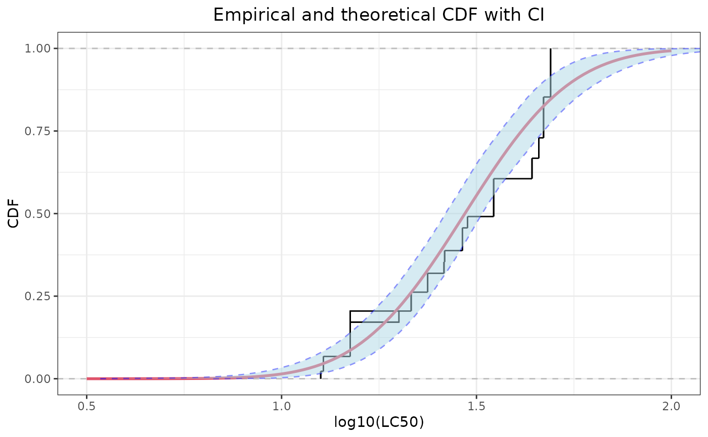
# zoom around the HC5
CIcdfplot(bln, CI.output = "quantile", CI.fill = "lightblue", CI.col = "blue",
xlab = "log10(LC50)", lines01 = TRUE, xlim = c(0.8, 1.5), ylim = c(0, 0.1))
abline(h = 0.05, lty = 2) # line corresponding to a CDF of 5 percent
if (ggplotEx) CIcdfplot(bln, CI.output = "quantile", CI.fill = "lightblue", CI.col = "blue",
xlab = "log10(LC50)", lines01 = TRUE, xlim = c(0.8, 1.5), ylim = c(0, 0.1),
plotstyle = "ggplot") +
ggplot2::geom_hline(yintercept = 0.05, lty = 2) # line corresponding to a CDF of 5 percent
# }
# plot 95 percent unilateral confidence intervals on quantiles
CIcdfplot(b1, CI.level = 95/100, CI.output = "quant", CI.type = "less",
CI.fill = "grey80", CI.col = "black", CI.lty = 1)
if (ggplotEx) CIcdfplot(b1, CI.level = 95/100, CI.output = "quant", CI.type = "less",
CI.fill = "grey80", CI.col = "black", CI.lty = 1, plotstyle = "ggplot")
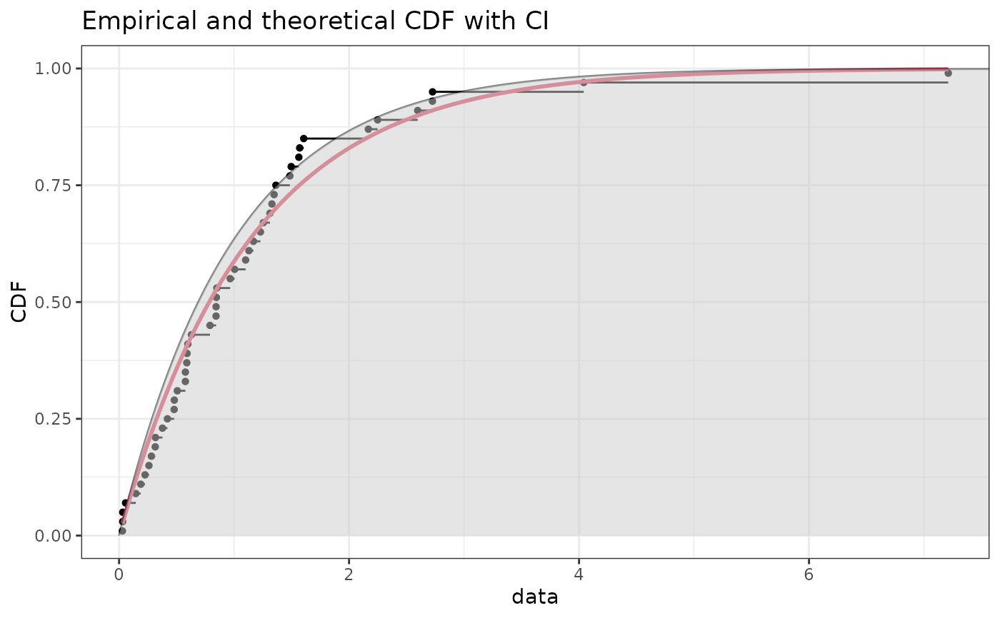
CIcdfplot(b1, CI.level= 95/100, CI.output = "quant", CI.type = "greater",
CI.fill = "grey80", CI.col = "black", CI.lty = 1)
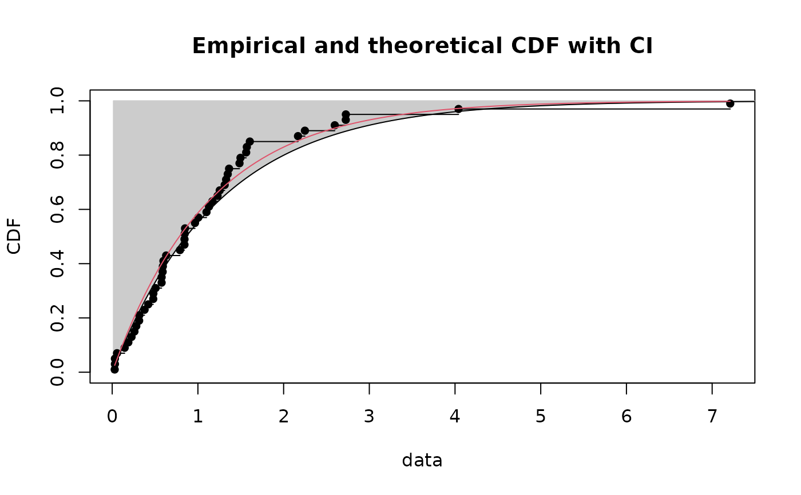
if (ggplotEx) CIcdfplot(b1, CI.level= 95/100, CI.output = "quant", CI.type = "greater",
CI.fill = "grey80", CI.col = "black", CI.lty = 1, plotstyle = "ggplot")
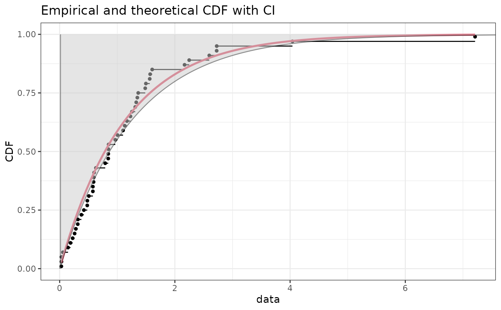
# (2) Fit of a normal distribution on acute toxicity log-transformed values of
# endosulfan for nonarthropod invertebrates, using maximum likelihood estimation
# to estimate what is called a species sensitivity distribution
# (SSD) in ecotoxicology, followed by estimation of the 5, 10 and 20 percent quantile
# values of the fitted distribution, which are called the 5, 10, 20 percent hazardous
# concentrations (HC5, HC10, HC20) in ecotoxicology, with their
# confidence intervals, from a small number of bootstrap
# iterations to satisfy CRAN running times constraint and plot of the band
# representing pointwise confidence intervals on any quantiles (any HCx values)
# For practical applications, we recommend to use at least niter=501 or niter=1001.
#
data(endosulfan)
log10ATV <- log10(subset(endosulfan, group == "NonArthroInvert")$ATV)
namesATV <- subset(endosulfan, group == "NonArthroInvert")$taxa
fln <- fitdist(log10ATV, "norm")
bln <- bootdist(fln, bootmethod ="param", niter=101)
quantile(bln, probs = c(0.05, 0.1, 0.2))
#> (original) estimated quantiles for each specified probability (non-censored data)
#> p=0.05 p=0.1 p=0.2
#> estimate 1.744227 2.080093 2.4868
#> Median of bootstrap estimates
#> p=0.05 p=0.1 p=0.2
#> estimate 1.844443 2.190122 2.565053
#>
#> two-sided 95 % CI of each quantile
#> p=0.05 p=0.1 p=0.2
#> 2.5 % 1.334340 1.697255 2.099378
#> 97.5 % 2.531564 2.770455 3.053706
CIcdfplot(bln, CI.output = "quantile", CI.fill = "lightblue", CI.col = "blue",
xlim = c(0,5), name.points=namesATV)
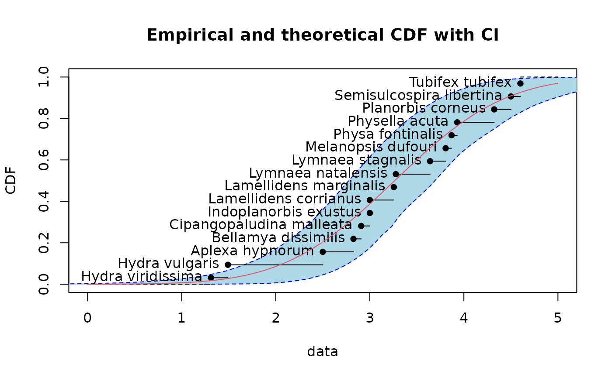
if (ggplotEx) CIcdfplot(bln, CI.output = "quantile", CI.fill = "lightblue", CI.col = "blue",
xlim = c(0,5), name.points=namesATV, plotstyle = "ggplot")
# (3) Same type of example as example (2) from ecotoxicology
# with censored data
#
data(salinity)
log10LC50 <-log10(salinity)
fln <- fitdistcens(log10LC50,"norm")
bln <- bootdistcens(fln, niter=101)
(HC5ln <- quantile(bln,probs = 0.05))
#> (original) estimated quantiles for each specified probability (censored data)
#> p=0.05
#> estimate 1.11584
#> Median of bootstrap estimates
#> p=0.05
#> estimate 1.120901
#>
#> two-sided 95 % CI of each quantile
#> p=0.05
#> 2.5 % 1.045539
#> 97.5 % 1.191979
CIcdfplot(bln, CI.output = "quantile", CI.fill = "lightblue", CI.col = "blue",
xlab = "log10(LC50)",xlim=c(0.5,2),lines01 = TRUE)
if (ggplotEx) CIcdfplot(bln, CI.output = "quantile", CI.fill = "lightblue", CI.col = "blue",
xlab = "log10(LC50)",xlim=c(0.5,2),lines01 = TRUE, plotstyle = "ggplot")
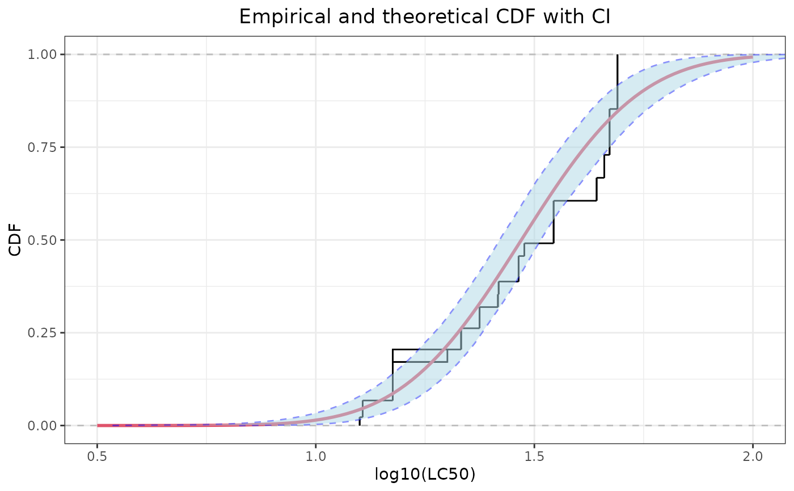
# zoom around the HC5
CIcdfplot(bln, CI.output = "quantile", CI.fill = "lightblue", CI.col = "blue",
xlab = "log10(LC50)", lines01 = TRUE, xlim = c(0.8, 1.5), ylim = c(0, 0.1))
abline(h = 0.05, lty = 2) # line corresponding to a CDF of 5 percent
if (ggplotEx) CIcdfplot(bln, CI.output = "quantile", CI.fill = "lightblue", CI.col = "blue",
xlab = "log10(LC50)", lines01 = TRUE, xlim = c(0.8, 1.5), ylim = c(0, 0.1),
plotstyle = "ggplot") +
ggplot2::geom_hline(yintercept = 0.05, lty = 2) # line corresponding to a CDF of 5 percent
# }